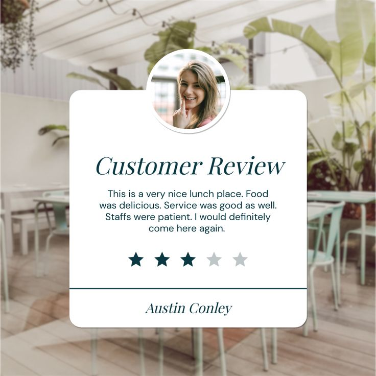
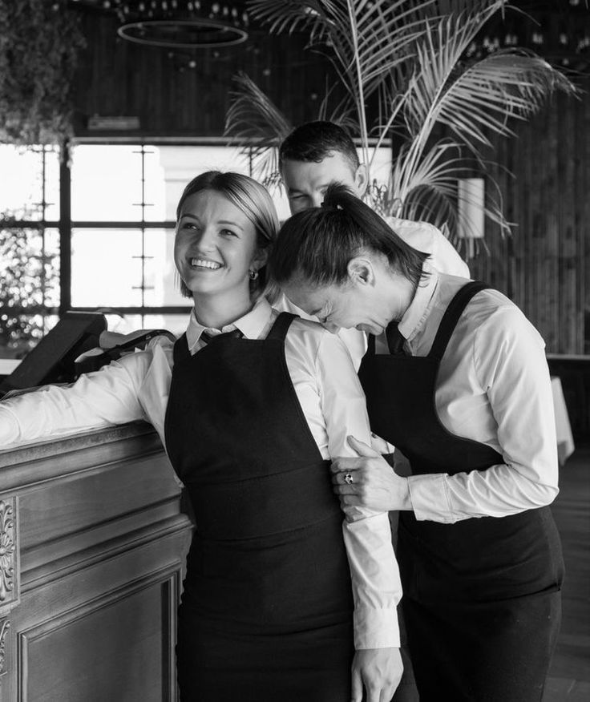
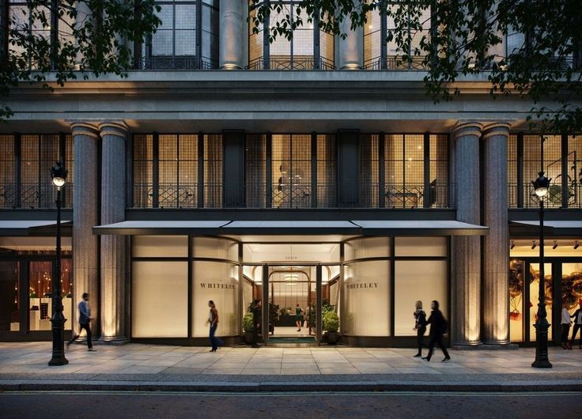

|
UN PETIT MOT POUR VOUSSur le site du Restaurant Romantic House. Notre équipe en cuisine vous fait vivre une expérience gastronomique unique et sensorielle. Cette expérience se caractérise par l'attention personnelle que vous recevez pendant que vous dînez avec une vue panoramique sur le centre de Montreal. |
|  |
NOTRE CLIENTELETous nos clients vivent des expériences classiques et inoubliables, on partage avec eux leurs bons moments. |
|  |
L'ÉQUIPELaissez-vous séduire par la cuisine internationale du chef exécutif Lina Golste. Le service, formé par le Maître d'Sommelier primé Ronald Opten, est jeune, ludique et très motivé. Ensemble, ce duo dynamique offre une expérience inégalée dans tous les domaines gastronomiques. |
|  |
LOCALISATION & HEURE D'OUVERTURE
Nous sommes situés au: Nous sommes ouverts
|